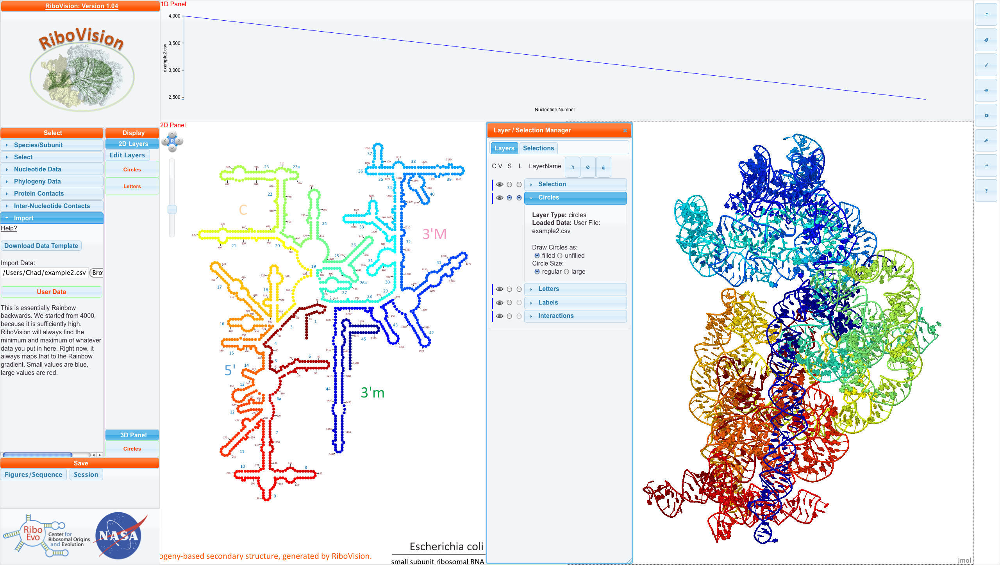

Colors can either be HTML5 color names or RGB hexidecimal codes. Here is a good list of color names. Here is a good converter between different color models.
We have reserved two colors for special use. We interpret perfect black, "#000000", to mean "no color". Assigning this color to nucleotides will make the letters black, as expected. However, applying #000000 to circles will make the circles not be drawn at all. If you would like black circles, use any other shade of black. For example, the colors "#000001", and "#010101", look indistinguishable from perfect black. We have also applied a special meaning to the color "#858585". It means "no color" in the same way as "#000000". It is a nice medium gray shade. Letters will show up in gray as expected. Circles won't show up at all. In addition to this, any nucleotide (letter or circle) in the "Linked" layer with either of these colors, will show up as gray in Jmol.
What we call "Color by Data" is that the user (you) have some data which you have converted into a numerical format. You may have decided this "by hand", or you may have adapted your computer programs to output to our input format. RiboVision will determine the minimum and maximum of your data, and map everything to one of 64 colors in our Rainbow gradient. A future update will let you decide the gradient yourself. Small values are mapped to blue, and large values are mapped to red.
For this example, we have decided to color the entire Small Subunit from red to blue. This is essentially backwards rainbow. We start from 4000 arbitraily, and count down by one for each nucleotide. In addition, we will set a coloumn called "DataDescription". In the first row, we write a description of the data. It can be as detailed as you like.
resNum, DataCol, DataDescription
16S:1, 4000, "This is essentially..."
16S:2, 3999,
16S:1274, 2727,
16S:1542, 2459,
Here is the csv file for this example. Below, is this file mapped onto E. coli SSU Phylogeny Structure. 
You can see our DataDescription in the "Main Menu" and see that example2.csv has been loaded into the Circles layer as filled and regular circles. NavLine contains a graph of DataCol, which starts from 4000, and goes down linearly to about 2500.